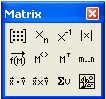

Matrix Toolbar and Operators |
Vector and Matrix operators can be used to evaluate expressions numerically or analytically. Click on the button in the Math toolbar to bring up the Matrix toolbar or choose Toolbars > Matrix from the View menu.

| Matrix Operators |
| Matrix Operators not on the Toolbar |
Buttons on the Matrix toolbar insert some of the Matrix-related operators. You can also type any operator using its keystroke. You may also wish to use the other summation operators to perform sums or the vector and matrix-related functions.
| Tooltips |
To learn what a button does, hover the cursor over the button until a tooltip shows the title and a description appears on the message line of the Status Bar.
Note that the tooltips are only documented for US keyboards. The Mathcad Keyboard Shortcuts page may show the shortcuts for your language keyboard.